Мое любимое аниме Наруто
Описание
Продолжить чтение статьи
Мир
Продолжить чтение статьи
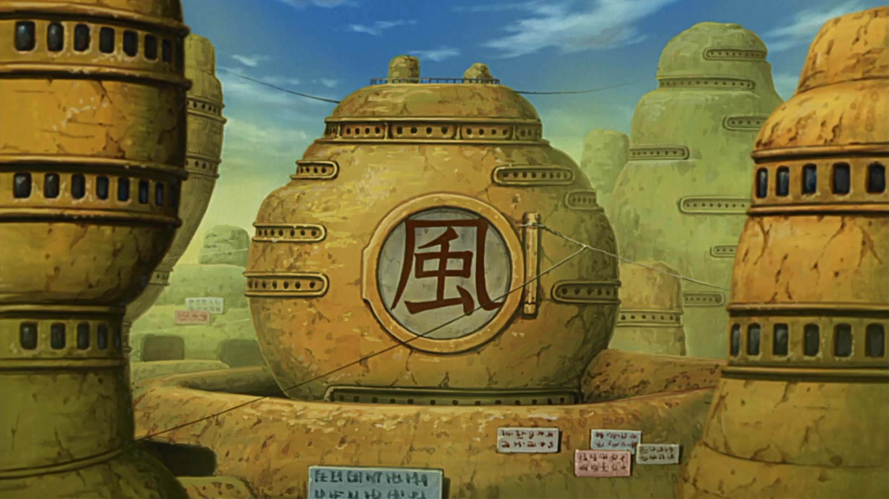
Продолжить чтение статьи
Продолжить чтение статьи
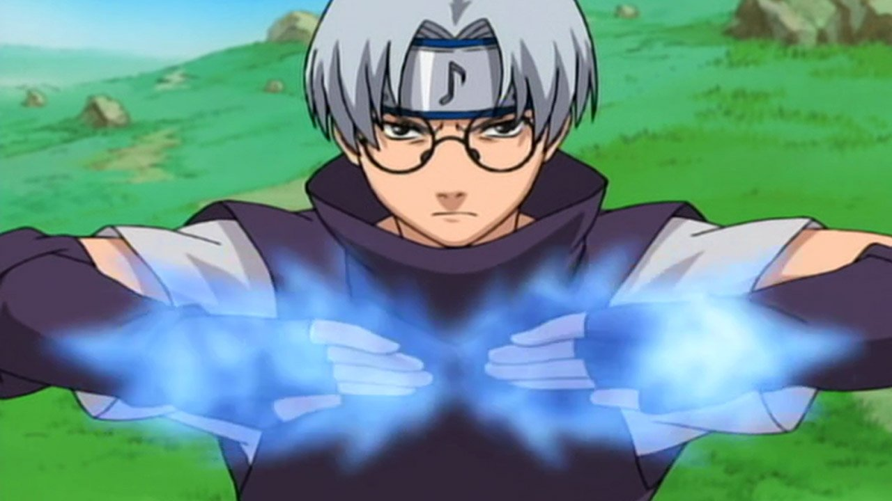
Продолжить чтение статьи
Сюжет
Предистория
Продолжить чтение статьи
Первая часть
Продолжить чтение статьи
Вторая часть
Продолжить чтение статьи
Мои впечатления
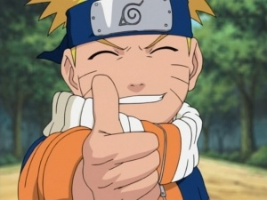
Вернуться на главную страницу

 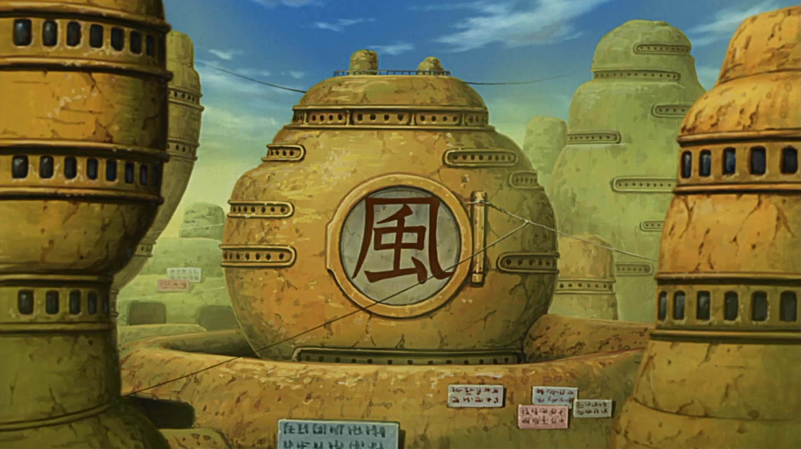
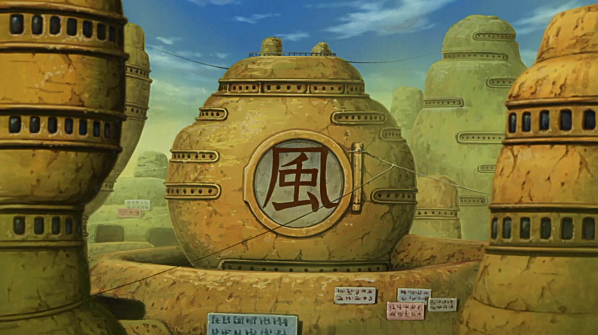


 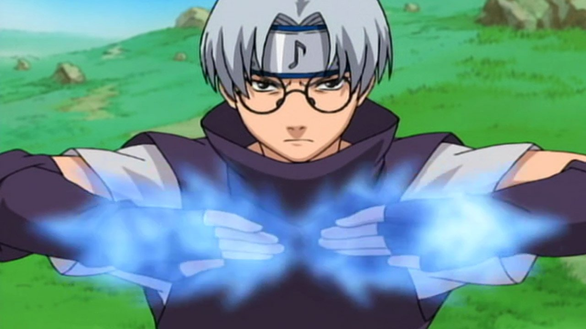
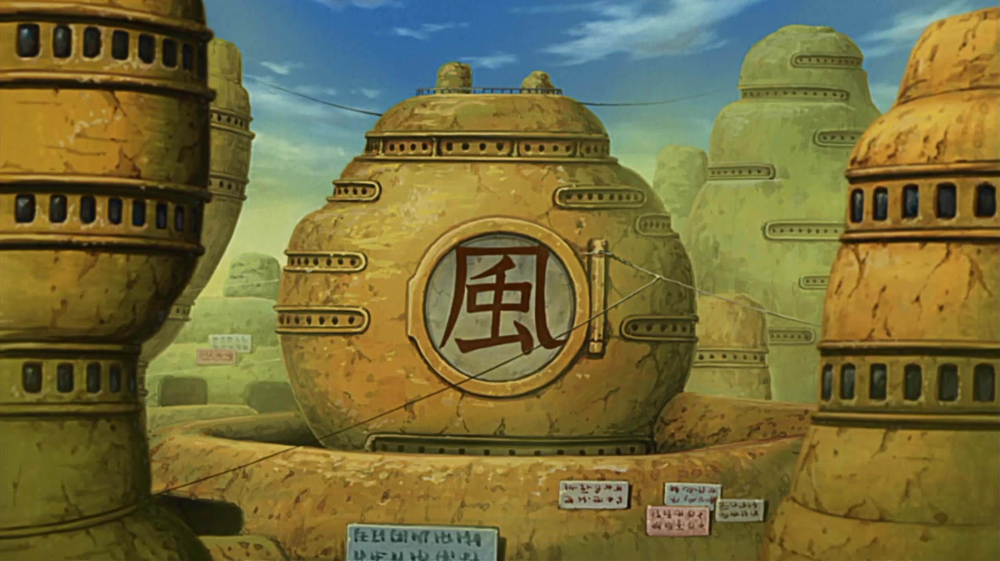
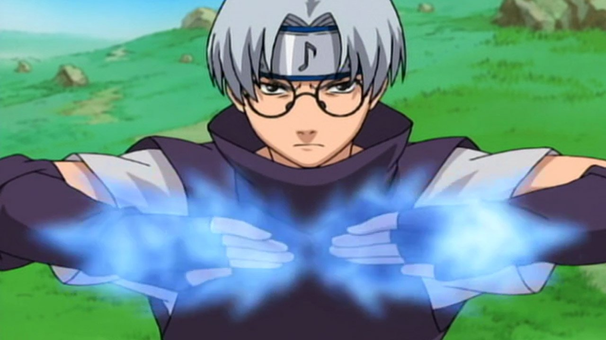
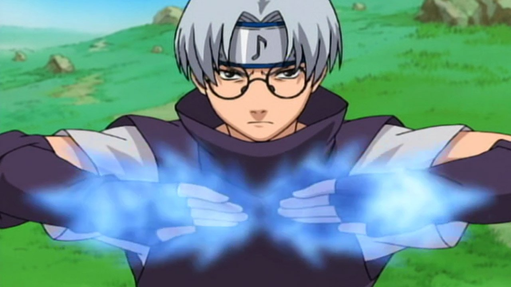
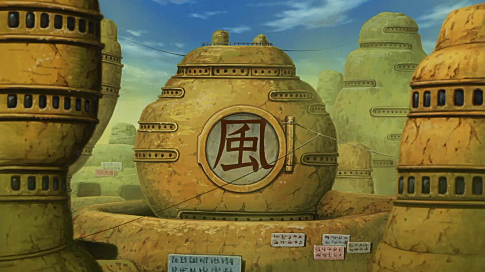
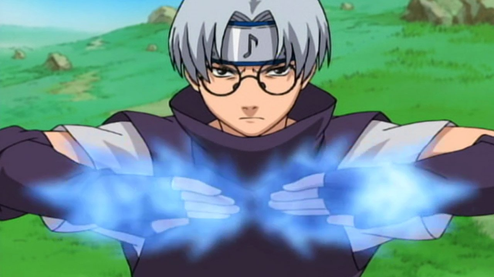